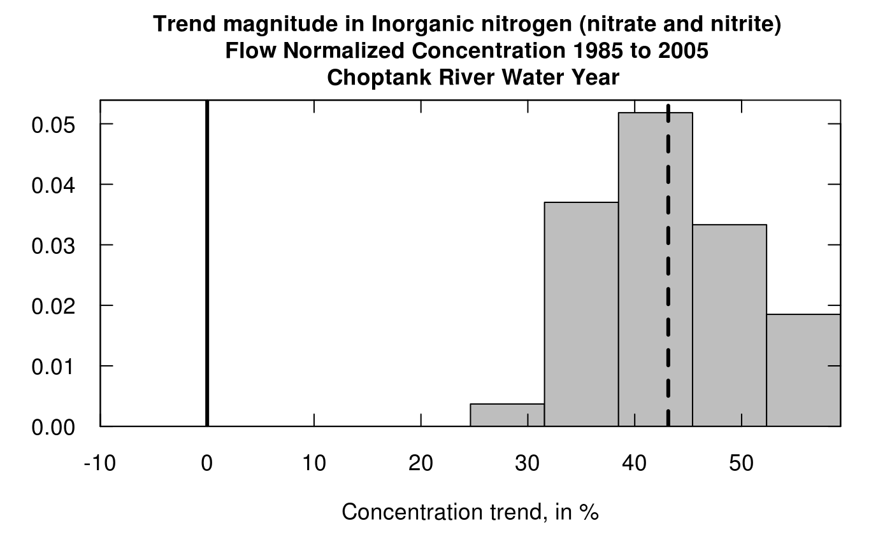

Produces a histogram of trend results from bootstrap process. The histogram shows the trend results expressed as percentage change between the first year (or first period) and the second year (or second period). It shows the zero line (no trend) and also shows the WRTDS estimate of the trend in percent. It is based on the output of either wBT or runPairsBoot.
plotHistogramTrend(eList, eBoot, caseSetUp, flux = TRUE, xMin = NA,
xMax = NA, xStep = NA, printTitle = TRUE, cex.main = 1.1,
cex.axis = 1.1, cex.lab = 1.1, col.fill = "grey", ...)named list with at least the Daily, Sample, and INFO dataframes. Created from the EGRET package, after running modelEstimation.
named list. Returned from wBT or from runPairsBoot.
data frame. Returned from trendSetUp, or if runPairsBoot was used, need to specify caseSetUp = NA.
logical if TRUE, plots flux results, if FALSE plots concentration results.
minimum bin value for histogram, it is good to have the xMin and xMax arguments straddle zero, default is NA (value set from the data).
maximum bin value for histogram, default is NA (value set from the data).
step size, typically multiples of 10 or 20, default is NA (value set from the data).
logical if TRUE, plot includes title.
numeric magnification of font size for title, default is 1.1.
numeric magnification of font size for axis, default is 1.1.
numeric magnification of font size for axis labels, default is 1.1.
character fill color for histogram, default is "grey".
base R graphical parameters that can be passed to the hist function
For any given set of results (from eBoot) it is best to run it first with the arguments xMin = NA, xMax = NA, and xStep = NA. Then, observing the range the histogram covers it can be run again with values of these three arguments selected by the user to provide for a more readable version of the histogram.
library(EGRET)
eList <- Choptank_eList
eBoot <- Choptank_eBoot
caseSetUp <- Choptank_caseSetUp
plotHistogramTrend(eList, eBoot, caseSetUp, flux = FALSE)

if (FALSE) {
# Using wBT:
caseSetUp <- trendSetUp(eList)
eBoot <- wBT(eList,caseSetUp)
plotHistogramTrend(eList, eBoot, caseSetUp,
flux = FALSE, xMin = -20, xMax = 60, xStep = 5)
plotHistogramTrend(eList, eBoot, caseSetUp,
flux = TRUE, xMin = -20, xMax = 60, xStep = 5)
# Using runPairs followed by runPairsBoot:
year1 <- 1985
year2 <- 2009
pairOut_2 <- runPairs(eList, year1, year2, windowSide = 7)
boot_pair_out <- runPairsBoot(eList, pairOut_2, nBoot = 10)
plotHistogramTrend(eList, boot_pair_out, caseSetUp = NA,
flux = TRUE, xMin = -20, xMax = 60, xStep = 5)
}